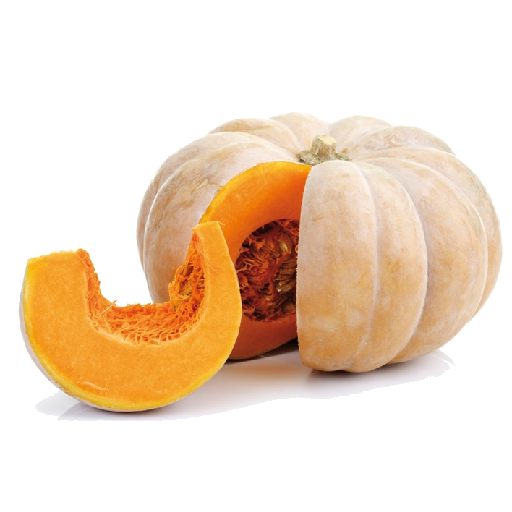

English
English
 Русский
Русский
 Հայերեն
Հայերեն

Pumpkin (armenian) kg

Scale code: 10694
Scale discount code: 10694
Description
Pumpkin is a nutritious vegetable with naturally sweet, soft orange flesh. It is rich in vitamin A, C, and antioxidants, which support eye health, immunity, and skin. Pumpkin is low in calories and high in fiber, making it a healthy addition to many meals.
It can be eaten in many ways:
- boiled or added to soups
- roasted as a side dish
- blended into sauces or smoothies
- baked into pies, muffins, or bread
- added to salads
- pumpkin seeds can be roasted and eaten as a healthy snack